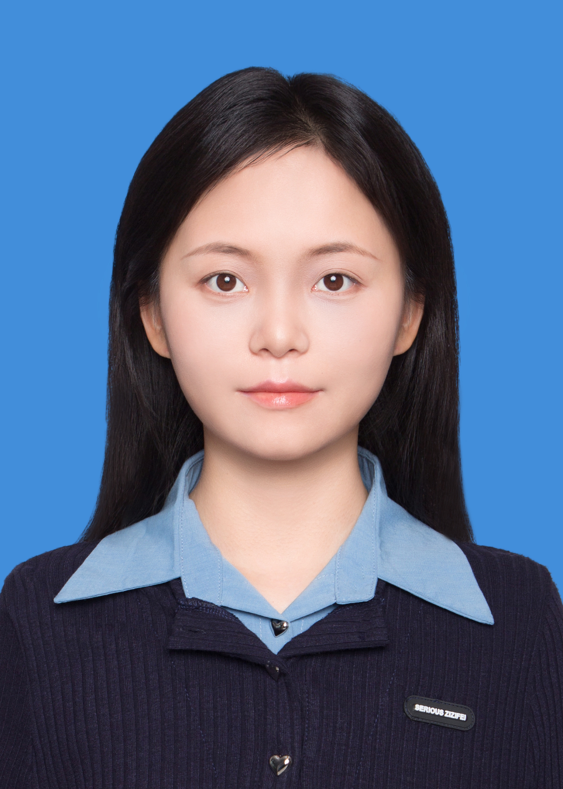

HE YING / PORTFOLIO
连接 AI 技术
与真实用户场景。
AI 产品经理 · 跨界造物者
浏览项目 把事情做清楚，把话说明白。01 / AI 奇点
关于我

何盈
AI 产品经理 · 跨界造物者
AI & 前沿技术
AI 产品落地
Prompt 工程
Agent 搭建
产品 & 设计
用户洞察
需求分析
产品规划
业务 & 增长
商业落地
数据决策
跨界协作
不太想被定义成一个 AI 工具使用者。
更想成为一个把事情做清楚、把话说明白的人。
与数字分身对话
大模型认知
持续测试大模型真实边界，清楚何时该用AI、用哪个、用在哪个节点。
AI 工程化落地
搭建过完整 Agent · Workflow · RAG 链路，从设计到验证全程自己跑通。
产品结构力
独立完成从需求拆解到 PRD 到交互原型的完整产品文档化输出。
跨界场景力
空间设计 × 文旅产品 × AI，跨界视角让用户场景感知比纯技术路径更立体。
02 / 星工场
AI 项目实战
从产品定义到工程交付，让想法成为可使用的产品。
03 / 造物星
产品设计与方案
从需求拆解、信息架构到原型规范，呈现产品设计的推导过程。
04 / 聚变星
工作与教育经历
跨界经历中的业务理解、产品思考与落地实践。
2025
至今
至今
AI 产品经理
独立探索
独立探索
Project Nebula · 个人 AI 产品独立研发
全面 All-in AI 产品，自设计到交付完整走通一个可交互的 AI 产品，持续验证 Agent / Workflow / RAG 的真实能力边界。
聚焦「用 AI 最短路径走通从想法到验证的闭环」——自拆需求、写 PRD、做视觉、实现前端交互，最终落地本站 Project Nebula。同时构建 3 条核心能力模块：AI 产品认知体系、Agent/Workflow 工程化实践、产品从 0 到 1 交付经验。
1
完整 AI 产品交付
3
核心能力模块构建
0
成本全栈验证
2024.07
— 2025.07
— 2025.07
文旅产品经理
策划与业务拆解
策划与业务拆解
文旅行业 · 产品策划与业务拆解
负责文旅与政企方向的产品策划与业务拆解，从模糊需求到结构化方案全程主导，多个项目实现高采纳率交付。
① 惠州体育公园 IP 孵化：需求结构化 + AIGC 工作流全链路交付
② 新疆罗布人村寨前策：信息架构重构 + PoC 可视化破除决策障碍
③ 业务知识库与 AI Agent 探索：SOP 梳理 → Workflow/Agent 产品演进
② 新疆罗布人村寨前策：信息架构重构 + PoC 可视化破除决策障碍
③ 业务知识库与 AI Agent 探索：SOP 梳理 → Workflow/Agent 产品演进
3
代表项目完整交付
80%+
方案汇报采纳率
AIGC
工作流落地实践
2019 — 2024
本科就读
工科院校
工科院校
重庆大学 · 985 / 211
工科底座培养了扎实的调研能力、汇报表达与设计审美，跨界复合是差异化优势而非劣势。
工科底座建立了严密的系统思维与逻辑推导能力；专业训练强化了一线调研、用户感知与可视化汇报表达能力——这些与 AI PM 所需的用户洞察、场景构建、沟通传达能力高度同构。跨界不是短板，是认知复合的差异化优势。
CQU
重庆大学
4yr
系统性学习周期
AI
× 产品 × 设计 三栖
05 / 脉冲星
洞察与思考
持续输入，独立判断。以下保留原站文章及其日期，示范内容单独标记。